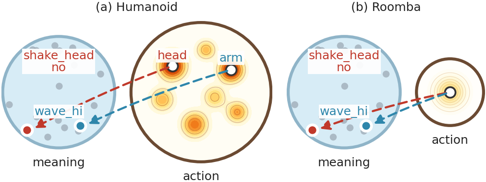
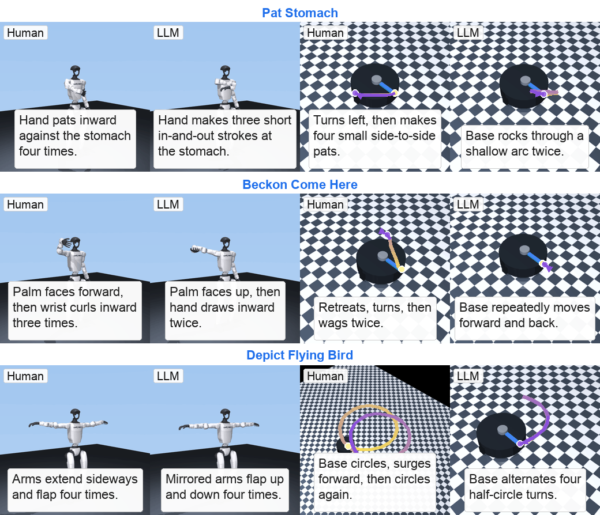
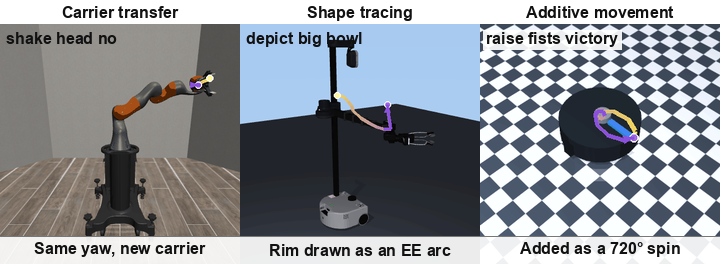
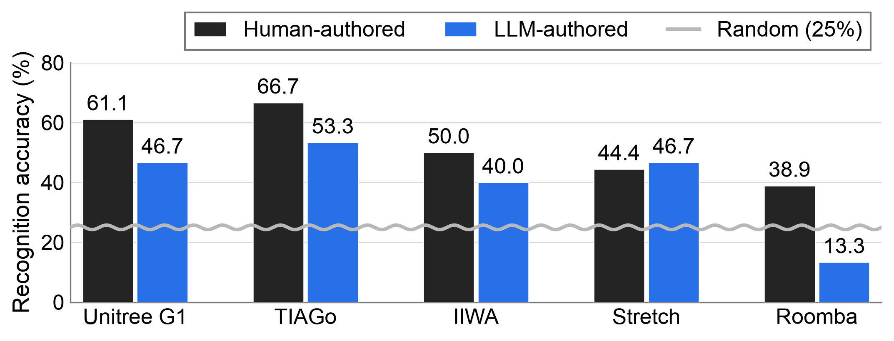
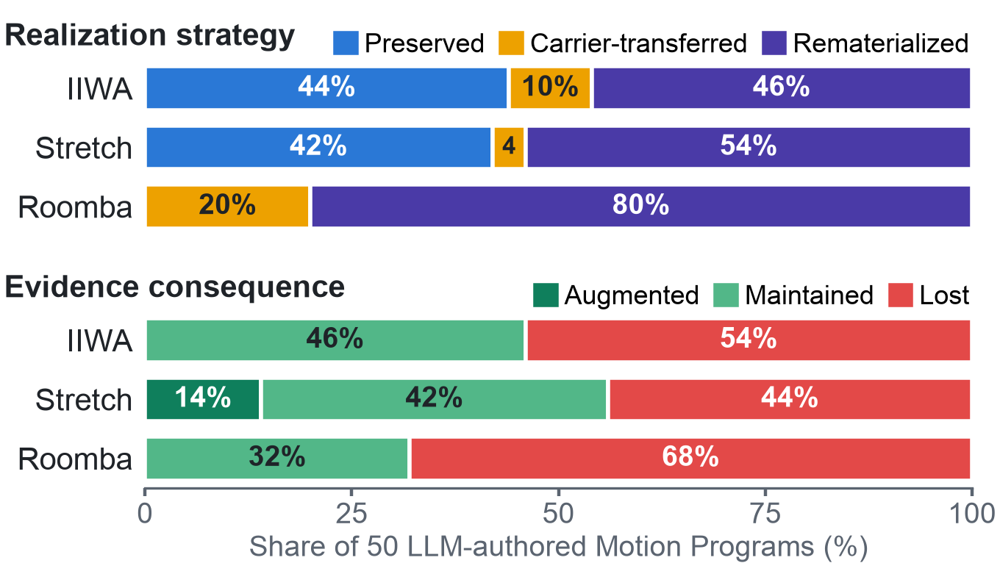
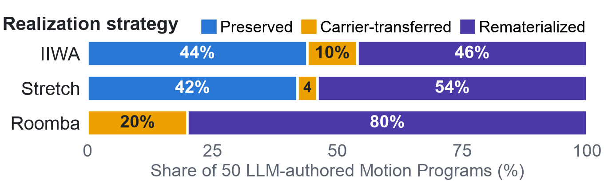

Paper artifacts
What Makes a Robot Gesture Recognizable?
A compact gallery of generated motions, recognition results,
and morphology-conditioned rematerialization.
Source and data

One symbolic program, embodiment-specific realization.

Human and LLM-authored gestures on humanoid and Roomba bodies.

Meaning is rematerialized when anatomical carriers disappear.

Human recognition across authors and morphologies.

Transfer outcomes on IIWA, Stretch, and Roomba.

Preservation, carrier transfer, and rematerialization strategies.